Welcome to STA 240!
John Zito
Duke University
STA 240 Fall 2025
Welcome to STA 240!
While you wait, please complete this brief questionnaire:
Teaching Team
| Mug | Name | Role | Office Hours |
|---|---|---|---|
 |
Hu, Yuang | TA | TBD |
| Liu, Aurora | Head TA | TBD | |
 |
Ma, Liane | TA | TBD |
 |
Zito, John | Instructor | Tue 3pm - 5pm |
Statistical Science Majors Union
Why should you study the mathematics of probability and statistics?
Reason 1: It’s necessary.
Example: the birthday problem
\(k\) people convene for a birthday party:
What is the probability that at least two of the attendees share a birthday?
How many people need to show up to the party for there to be a 50% chance of at least one match?
Most people guess that you need, like, a lot.
Your guesses
Example: the birthday problem
| no. of attendees (k) | Prob(at least one bday match) |
|---|---|
| 1 | 0% |
| 4 | 1.6% |
| 16 | 28% |
| 23 | 50.7% |
| 40 | 89% |
| 56 | 98% |
| 60 | 99.4 |
| \(\vdots\) | \(\vdots\) |
| 366 | 100.0% |
Key words: binomial coefficient, pigeonhole principle
Example: the birthday problem
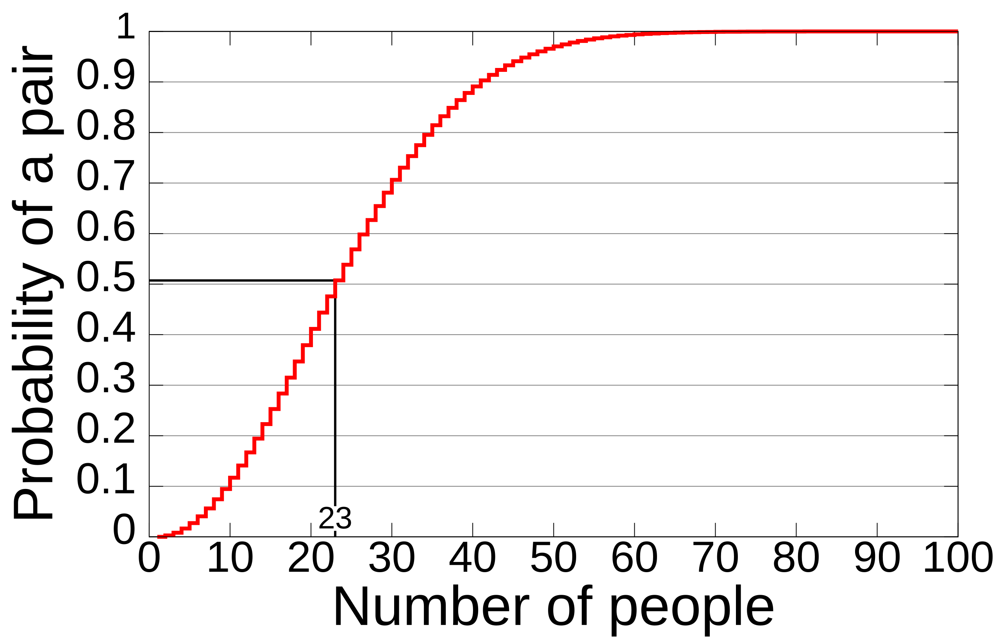
Any matches today?
| birthday | count |
|---|---|
| 09-18 | 1 |
Example: the Monty Hall problem
Let’s play: https://montyhall.io/
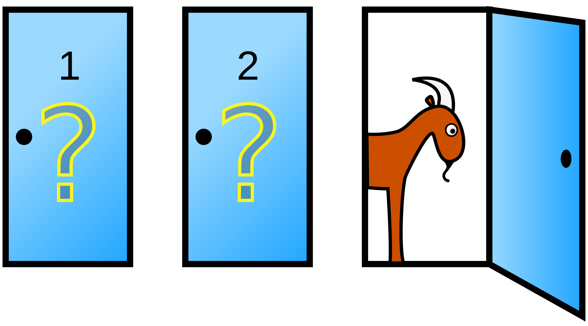
Very counterintuitive
Most people start out thinking that the two doors are equally likely to contain the prize, so switching doesn’t matter. In fact, you have a 2/3 chance of winning if you switch.
You people

Example: which is “truly” random?

- 1 of you said Left is pure random;
- of you said Right is pure random.
Example: which is “truly” random?

- Left: uniform random scatter;
- Right: points manipulated to “repel” each other (no clumps).
This is why Spotify shuffle stinks
- It used to be a pure random shuffle;
- Then people complained that it didn’t feel random to them:
- streaks of the same artist in a row;
- clumps of the same genre, etc;
- Now they do lord-only-knows-what.

Example: the wisdom of crowds
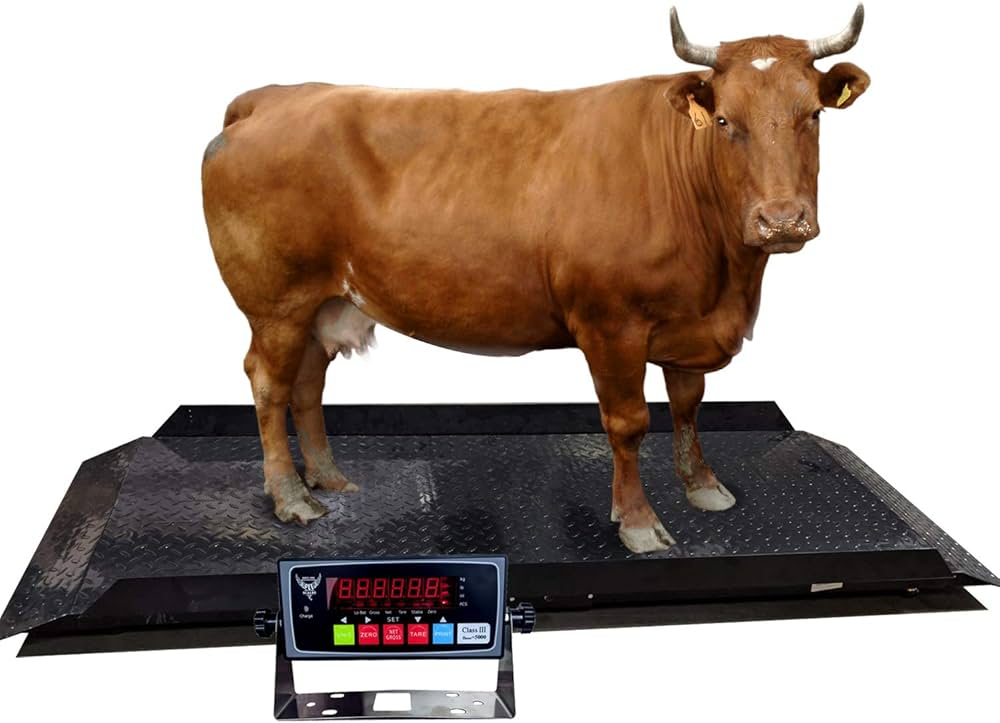
At a 1906 country fair in Plymouth, 800 people participated in a contest to estimate the weight of an ox. Francis Galton observed that the median guess, 1207 lbs, was accurate within 1% of the true weight of 1198 lbs.
Lesson
The aggregation of many imperfect estimates/guesses is often better than a needle-in-haystack search for the “best” individual guess.
Isn’t that obvious?
It took humans a long time to realize this. The first recorded uses of an “average” were during Isaac Newton’s lifetime (see Stigler’s Seven Pillars of Statistical Wisdom).
Weight guessing

Price guessing

Age guessing
Jascha Heifetz? Bette Midler? Bea Arthur?

The modern-day wisdom of crowds?
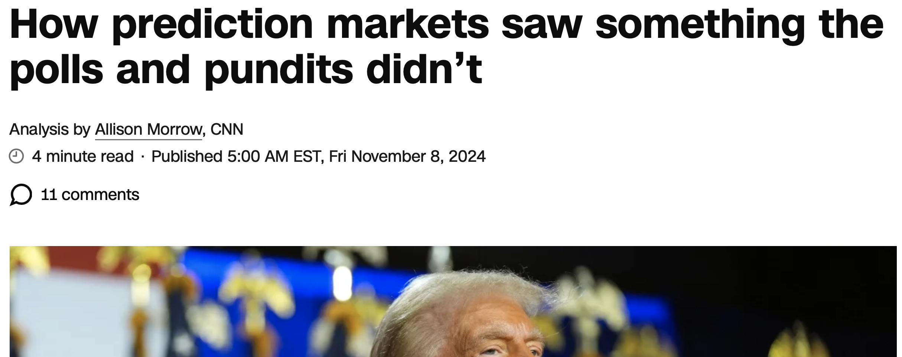
(source: CNN)
Example: the folly of doctors
A 50-year-old, asymptomatic woman tests positive for breast cancer. Alarming, but no diagnostic test is perfect. If the prevalence of breast cancer in the population is 1%, if the true positive rate of the test is 90%, and if the false positive rate is 9%, what is the chance that the woman actually has cancer, given that she tested positive?
You will know how to answer this in four weeks. Doctors though…
Only 34 out of 160 surveyed gynecologist got it right (9%). Almost half of them said 90%.
“We can only imagine how much anxiety those innumerate doctors instil in women.”
Sally Clark (1964 - 2007)
- English solicitor;
- 1996: first son died in bed at 11 weeks;
- 1998: second son died in bed at 8 weeks;
- Clark arrested on suspicion of murder;
- Defense claimed it was SIDS (sudden infant death syndrome).
Sir Roy Meadow (1933 - )
- Pediatrician specializing in “Munchausen syndrome by proxy;”
- Gave erroneous “expert” testimony that there is a “1 in 73,000,000” chance of two SIDS deaths in the same family;
- first, that’s not true;
- second, so what?
- 1999: Clark convicted.
A sad story
- Stats community loudly panned Meadow’s testimony;
- 2003: conviction overturned on appeal after revelation that exculpatory evidence was suppressed;
- 2007: Clark drinks herself to death.
Reason 1: It’s necessary.

Human intuition and “common sense” about probability and statistics are often just flat out wrong, in silly and dangerous ways. Mere mortals require the scaffolding of mathematics to discipline our thinking.
Reason 2: It’s useful.
New title: The Unreasonable Effectiveness of Probability in…Everything?
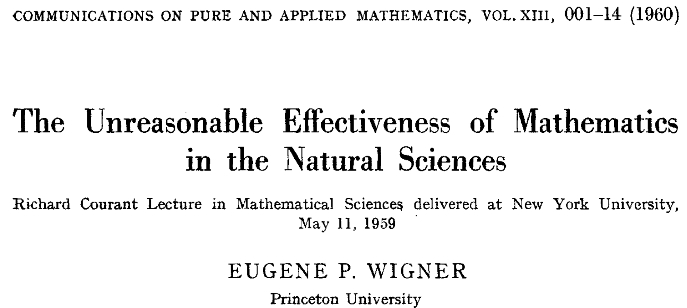
Example: LLMs
Question
What method does ChatGPT use to generate the next word in one of its responses?
Example: the mathematics of insurance
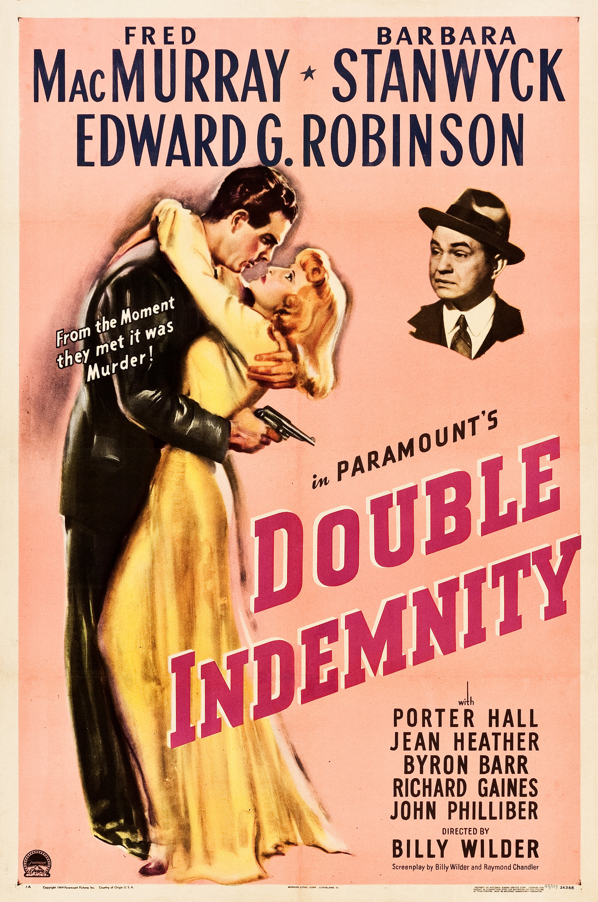
- When an insurance company sells you a policy, they are making a bet that you won’t need it;
- If all policyholders make a claim, they’re ruined;
- Who should they sell to, and at what price, to ensure they don’t go broke?
- Ask an actuary! Licensed professionals with expertise in probability, statistics, and risk management.
Example: the mathematics of insurance
- Nurse practitioner
- IT Manager
- Physician Assistant
- Financial Manager
- Software Developer
- Information Security Analyst
- Health Services Manager
- Data Scientist
- Speech-Language Pathologist
- Actuary
- Future prospects (30%)
- Wage potential (25%)
- Employment (20%)
- Job safety/stability (15%)
- Work-life balance (10%)
Probably isn’t boring these days
Plenty of complex, challenging, high-impact issues:

Example: genetics?
Example: quantum mechanics
key words: Schrödinger’s cat, uncertainty principle, etc
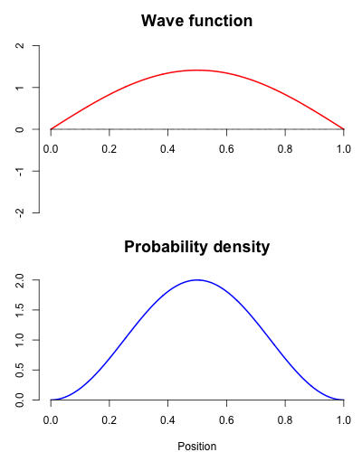
- Probability is fundamentally braided into the fabric of reality;
- Particles at the (sub)atomic level do not have a definite position and momentum until measured;
- There are only probabilities associated with the possible outcomes;
- These ideas are hard, but some of the math will be accessible to us.
Reason 2: It’s useful.
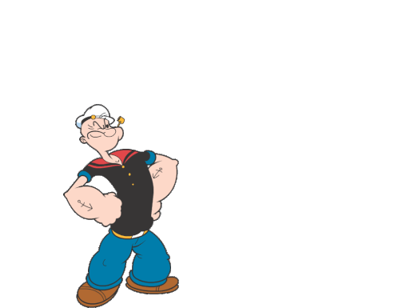
No area of science or technology can be properly understood without knowing something about probability. Period.
Reason 3: It’s beautiful.
Two old hags
Bertrand Russell, Mysticism and Logic and Other Essays (1917)
“Mathematics, rightly viewed, possesses not only truth, but supreme beauty cold and austere, like that of sculpture, without appeal to any part of our weaker nature, without the gorgeous trappings of painting or music, yet sublimely pure, and capable of a stern perfection such as only the greatest art can show.”
Albert Einstein, “The Late Emmy Noether” (1935)
“Pure mathematics is, in its way, the poetry of logical ideas.”
This is a theorem we will prove:

Reason 3: It’s beautiful.
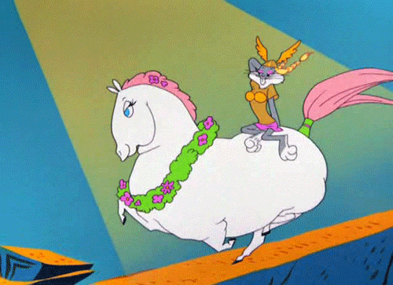
Ostensibly random behavior can nevertheless be quite patternful, in ways that we can actually penetrate with elegant mathematics.
Why study mathematical probstat?
It’s necessary.
- Humans suck at thinking about this stuff.
It’s useful.
- It makes studying other things so much easier.
It’s beautiful.
- This is the main reason, honestly.
Sound good?
Syllabus highlights
Bookmark the course page!
Final grade breakdown
Your final course grade will be calculated as follows:
| Category | Percentage |
|---|---|
| Labs | 10% |
| Problem Sets | 30% |
| Midterm Exam 1 | 20% |
| Midterm Exam 2 | 20% |
| Final exam | 20% |
Warning
The final letter grade will be based on the usual thresholds, which will not change and will be applied exactly. So no curve and no rounding.
So…where’s the wiggle room?
- We drop the two lowest labs;
- We drop the lowest problem set;
- We will replace your lowest midterm score with your final exam score (if it’s better).
Labs (10%)
Led by Aurora in Perkins LINK 087 (Classroom 3):
- Thursday 1:25 PM - 2:40 PM;
- Thursday 3:05 PM - 4:20 PM.
Guided activities introducing you to special topics, extensions, applications, and case studies. We will also introduce some basic R stuff, and we will use Quarto for the lab write-ups.
Plan to attend regularly
Designed to be complete-able during the lab period, but due by 11:59 PM that same day.
Problem Sets (30%)
- Mostly pencil-and-paper math problems, with some coding thrown in occasionally;
- Compose solutions however you want: scan or photograph written work, handwriting capture, LaTeX, Quarto, whatever;
- Submit a single PDF in Gradescope (and mark your pages!)
Late policy
No late work will be accepted unless you request an extension in advance by e-mailing JZ. All reasonable requests will be entertained, but extensions will not be long.
Exams (20% each)
Traditional, in-class, written exams:
- Midterm 1: Thursday October 9 in your lab;
- Midterm 2: Thursday November 13 in your lab;
- Final Exam: Friday December 12.
You are allowed only two resources:
- A “dumb” calculator (no wi-fi), which you won’t need;
- Both sides of one 8.5” x 11” note sheet created by you.
If you need testing accommodations…
Make sure I get an SDAO letter, and make your appointments in the Testing Center now.
Attendance
Not required. Live your life.
Communication
If you wish to ask questions in writing…
Post on Ed: about general course policies and content;
Email JZ directly: personal matters.
You should not really be emailing the TAs directly for any reason.
Collaboration
You are enthusiastically encouraged to work together on labs and problem sets. You will learn a lot from each other! Two policies:
- ✅ Acknowledge your collaborators: “Aloysius, Cybill, and I worked together on this problem;”
- ❌ Do not outright share or copy solutions. All submitted work must be your own.
Violation of the second policy is plagiarism. Sharers and recipients alike are referred to the conduct office and receive zeros.
Use of outside resources, including AI
- If you find a problem solution online (or prompt an LLM to generate one) and submit it as your own work, that will obviously be considered plagiarism;
- Otherwise, all outside resources are fair game for you to study and get extra practice;
- If you outsource all of your thinking to a language model, you will probably tank every exam. Good luck!
What’s the level of math here?
This is essentially a pencil-and-paper math class. We will use all of the basic skills taught in Calc I and II:
- differentiation (power rule, chain rule, all that)
- integration (FTOC, improper integrals, substitution, by parts…)
- limits and continuity (L’Hôpital’s rule, etc)
- infinite series (Taylor series for \(e^x\), anyone?)
REVIEW: Problem Set 0 is due 5PM Friday September 5.
This is not sink-or-swim.
- Lab on Thursday August 28 is a review session and work period for this assignment;
- The course page has a math review section you can refer to.
So, what are we studying, anyway?
Probability
What do we do?
State the distribution (rules) of some random phenomenon, and then study how the realizations of that phenomenon “typically” behave.
An archetypal probability problem
Given a fair coin, how many flips will it take on average until you observe the first head?
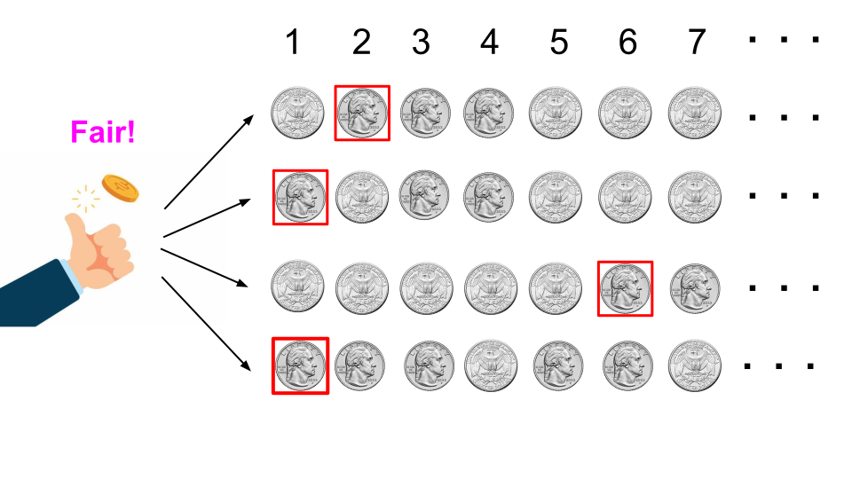
An archetypal probability problem
Given a fair coin, how many flips will it take on average until you observe the first head?
Why is this a probability problem?
- select a phenomenon to study (the outcome of a coin flip);
- fully specify its distribution (it’s a fair, 50-50 coin);
- study typical behavior of realizations (how many flips on average until the first head?).
Statistics is “probability in reverse”
What do we do?
Start with the realizations of a random phenomenon with unknown distribution, and try to use those realizations to figure out what the distribution is.
An archetypal statistics problem
Given 28 flips from a mysterious coin, can you tell if it is fair?
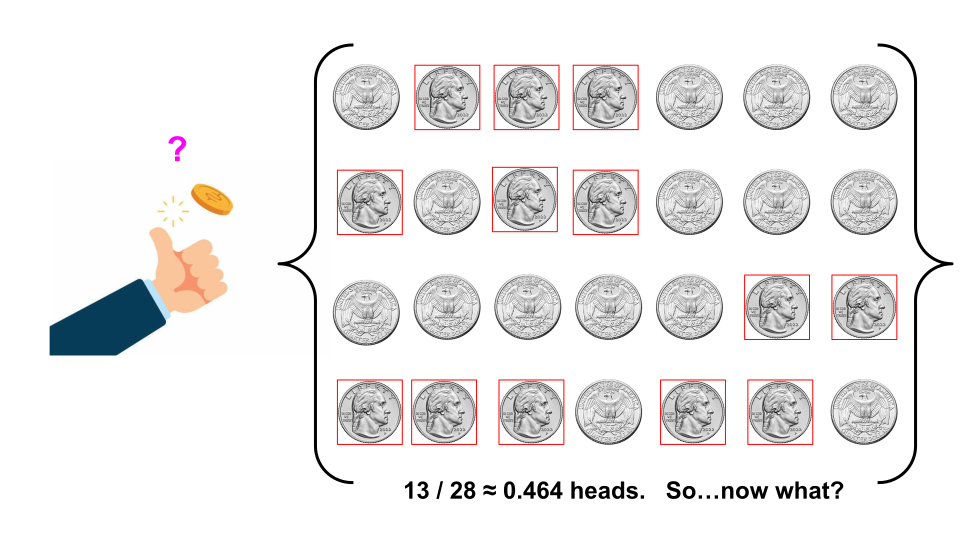
An archetypal statistics problem
Given 28 flips from a mysterious coin, can you tell if it is fair?
- In probability, we assumed that the coin was fair, and then reasoned deductively from that;
- In statistics, we do not do this;
- We start with some coin, which may or may not be fair, and then we try to “infer” its properties based on the data.
Probability and statistics
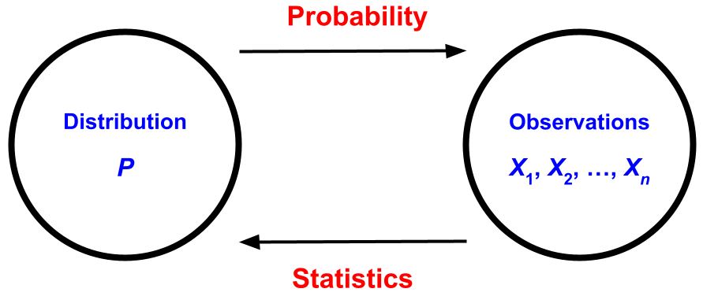
| Probability | Forward problem Deductive Reasons from rules to consequences |
| Statistics | Inverse problem Inductive Observe consequences, and infer rules |
Forward problem versus inverse problem

Forward: read the rulebook, and then play a game of chess;
Inverse: watch a chess match, and based on the players’ behavior, try to guess the rules.
Forward problem versus inverse problem
Differentiation is a forward problem. You know the function \(F\), and you take its darn derivative;
Integration is an inverse problem. Given the derivative, you have to work backward to figure out what the original function was:
\[ \text{FTOC:}\quad\int_a^bF'(x)\,\text{d} x=F(b)-F(a). \]
Inverse problems are tricky!
Forward
“Here’s the question. What’s the answer?”
Inverse
“If this is the answer, then what was the question?”
Gird your loins
Like all inverse problems, you will find that statistics is subtler, less well-defined, less straightforward, and more open-ended than probability.
The philosophy of probability
Two common interpretive perspectives:
- Frequentist: probability describes the long run frequency of repeatable events;
- Subjective: probability describes an observer’s subjective experience of uncertainty. AKA: their “degrees of belief.”
You need both perspectives.
Like the wave-particle duality of light, both are true and useful, but their coexistence can be tense and uneasy. We just have to learn to live with that.
The math doesn’t care which you prefer.
Regardless your interpretation, the mathematics of probability is the same.